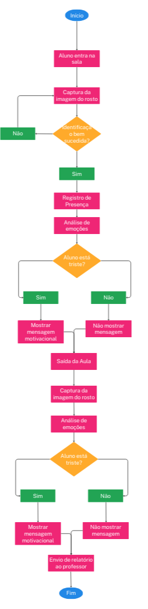

Integrantes
Gustavo da Silva Santos RA: 11202131428
Henrique Vicente Ferraro Oliveira RA: 11201721650
Igor Santana Arruda RA: 11201722737
Contexto e Cenários de Aplicação
Contexto
- Objetivo do Projeto: O projeto visa utilizar tecnologia de visão computacional e reconhecimento facial para monitorar o humor
dos alunos em tempo real. O objetivo é registrar a presença, avaliar o bem-estar emocional dos alunos e adaptar a experiência educacional com
base nas suas necessidades emocionais. Isso permitirá ao professor entender melhor a dinâmica da aula e ajustar suas abordagens pedagógicas para
melhorar o engajamento e a satisfação dos alunos.
- Tecnologia Utilizada:
- Reconhecimento Facial: Para identificar os alunos e registrar sua presença.
- Análise de Emoções: Para determinar o humor dos alunos com base em expressões faciais.
- Mecanismo de Geração de Relatórios: Para compilar e apresentar dados sobre o humor dos alunos ao professor.
- Sistema de Áudio: Para tocar músicas específicas com base no humor detectado.
Cenários de Aplicação
- Entrada na Sala de Aula:
- Cenário: Um aluno entra na sala e é recebido por uma câmera posicionada na entrada. A câmera captura a imagem do rosto do aluno e o sistema realiza o reconhecimento facial para registrar a presença.
- Processo: O sistema analisa a expressão facial do aluno para determinar seu humor atual. Se o aluno parecer triste, o sistema pode tocar uma música alegre para melhorar seu estado emocional.
- Durante a Aula:
- Cenário: O professor pode monitorar em tempo real os níveis de humor dos alunos. Se muitos alunos parecerem desinteressados ou tristes, o professor pode ajustar a abordagem da aula ou fazer uma pausa para uma atividade mais interativa.
- Processo: O sistema pode coletar dados sobre o humor dos alunos em intervalos regulares e gerar alertas para o professor se houver uma mudança significativa no estado emocional da turma.
- Saída da Sala de Aula:
- Cenário: Ao final da aula, os alunos passam novamente pela câmera para registrar a saída. O sistema realiza uma nova análise do humor para comparar com o humor registrado no início da aula.
- Processo: O sistema gera um relatório detalhado mostrando o humor inicial e final dos alunos, destacando quaisquer mudanças significativas. Esse relatório é enviado ao professor para avaliação.
- Relatórios e Feedback:
- Cenário: O professor recebe relatórios periódicos sobre o humor dos alunos. Estes relatórios incluem gráficos e análises das variações de humor ao longo do tempo.
- Processo: O professor pode usar essas informações para entender melhor a eficácia das suas aulas e ajustar o planejamento de acordo com as necessidades emocionais dos alunos.
Considerações Adicionais
- Privacidade e Ética: Certifique-se de que o projeto respeite a privacidade dos alunos e obtenha o consentimento necessário para o uso de suas imagens e dados emocionais.
- Precisão da Análise de Emoções: A precisão do sistema de análise de emoções pode variar. É importante testar e ajustar o sistema para minimizar erros e garantir que as intervenções baseadas no humor sejam apropriadas.
- Feedback dos Alunos e Professores: Inclua um mecanismo para obter feedback dos usuários (alunos e professores) para avaliar a eficácia do sistema e realizar melhorias contínuas.
Modelagem funcional do sistema - Diagrama de Fluxo

Explicação do Diagrama de Fluxo
1. Início
2. Aluno Entra na Sala
- Ação: Captura da imagem do rosto do aluno pela câmera.
3. Reconhecimento Facial
- Decisão: O sistema identifica o aluno?
- Sim: Prosseguir para o próximo passo.
- Não: Solicitar ao aluno para tentar novamente.
4. Registro de Presença
- Ação: Sistema registra a presença do aluno.
5. Análise de Emoções
- Ação: Sistema analisa a expressão facial do aluno para determinar o humor.
6. Decisão de Humor
- Decisão: O aluno está triste?
- Sim: Tocar uma música alegre para melhorar o estado emocional do aluno.
- Não: Não tocar música ou tocar música neutra.
7. Saída da Sala
- Ação: Captura da imagem do rosto do aluno na saída.
8. Reanálise do Humor
- Ação: Sistema realiza uma nova análise do humor do aluno na saída.
9. Geração de Relatório
- Ação: O sistema gera um relatório com o humor inicial e final dos alunos.
- Decisão: O humor mudou significativamente?
- Sim: Destacar as mudanças significativas no relatório.
- Não: Relatar o humor como está.
10. Envio de Relatório ao Professor
- Ação: Envio do relatório detalhado para o professor.
11. Fim